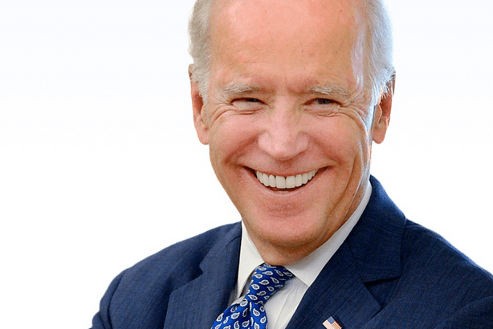

What’s Good and Bad About a Biden Presidential Run?
With Biden’s poll numbers coming down, you may be wondering what is hurting him and what is helping.
The Good News
Former Vice President Joe Biden has the best political lane to maintain his lead as the frontrunner for the Democratic Party’s nomination.In marketing we call this a niche.He has the conservative and more moderate Democrats.That might not produce as much Twitter activity or create as much internet buzz, but it does mean he holds the greatest number of votes.These are the older and retired Democrats that are far more reliable voters and are not easily swayed.Not only is this possibly the largest pool of voters but Biden seems to be the only one with large name recognition swimming in it.Billionaires Michael Bloomberg and Howard Schultz were in this lane too but they have already halted their campaigns.
Now the large number of competitors in the smaller, much more aggressive, progressive voter pool are facing a glugfest, but the survivors will be battle tested and sharp.Has Biden chosen (due to his age?)to coast on his lead, treating this as a marathon not a sprint?He has limited his public exposure over the last two weeks and focused on private fundraising, something his advisers admit is a strategic choice, claiming:
'The candidate’s time is better spent on vital but less public activities…such as fundraising, one-on-one calls, policy development and the building of a campaign infrastructure.'
This is the Bad News
No way is this true because the best way to show strength, build enthusiasm and secure votes is through rallies.This is the big negative on Joe Biden.He has not proven he can bring draw a crowd.Does he have a message that will energize enough voters to fill a stadium, like his general election opponent?
Rallies produce a multiplier effect up to 14.Meaning for every attendee you can receive up to 14 additional votes.President Trump (R) proved against Hillary Clinton in 2016 that this can be an effective way to campaign for only a fraction of the cost.Hillary ran a limited exposure campaign, big in fundraising, and she had a lot fewer Democratic primary opponents trying to put a knife in her back.She could not pack a large room and so far, it appears, neither can Biden.
Our best estimate is that the 'Sleepy Joe' moniker will grow.Biden will easily hold his large pool of Democratic primary voters.The big question is: can the Democratic left coalesce around one candidate before it’s too late?If so, Biden is weak enough to fall in a head-to-head primary fight.If the left remains split, Biden will survive.He’s running a campaign modeled more off of Hillary Clinton than his old running mate.Former President Barack Obama could pack a house.Yes, you can tell voters that you’re going to bring back the Obama/Biden Administration, but they’re not going to believe you if you continue to campaign like Hillary Clinton.
[bsa_pro_ad_space id=4]
Share on Facebook Tweet Follow us
I try to write fact based articles that most people won't.Lets improve this world including both Corporate and Government malfeasance.If you have a lead about a ethical failure please comment on my article or in many of my comments.
Posted On: 2019-05-27T00:00:00
Posted By: Jay Black



Content Date: 2019-05-27
Download Date: 2021-07-09
Document ID: L0C04DUGV